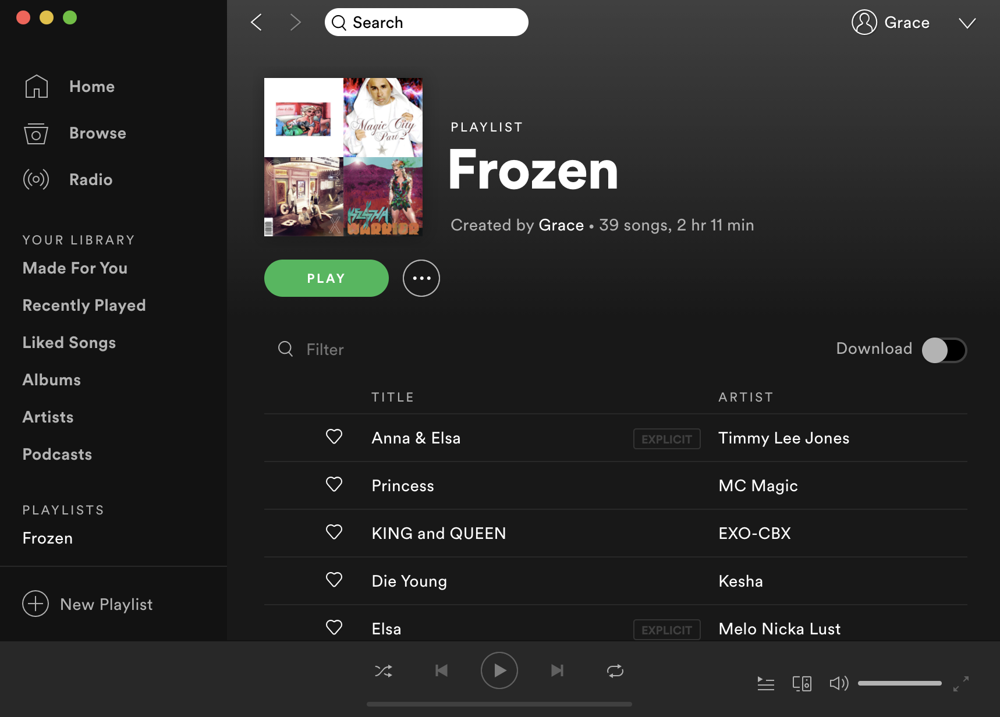
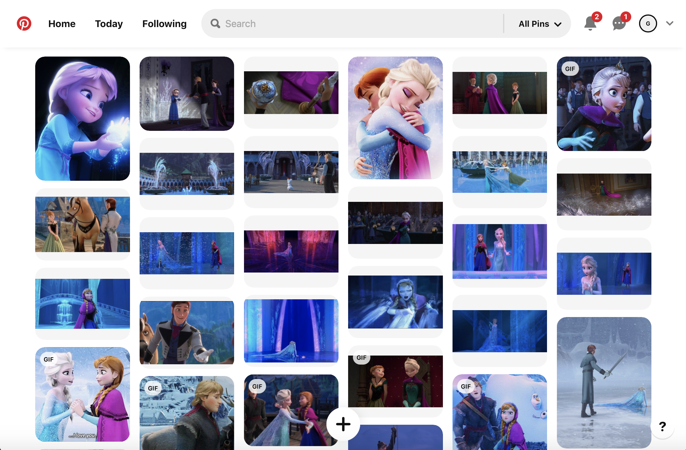

Frozen told in Spotify:

Spotify allows users to personalize playlist, which is a coolection of songs, on their own
and are able to adjust the position of the songs. I was able to find take the title of songs
and group them in to sentences in one playlist.
Frozen told in Pinterest:

Pinterest allows users to create boards where pins could be save, collect, and organized.
I created a board in Pinterest to collect images and gifs from the Frozen movie.